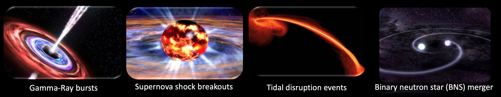
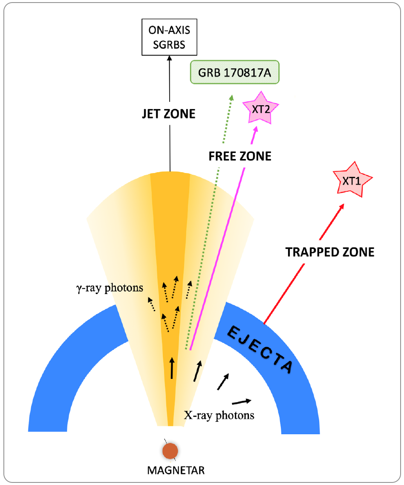

My research
My research interests are extra-galactic high energy transients, including gamma-ray burst, binary neutron star merger magnetar powered X-ray emissions, SN shock breakouts and tidal disruption events, etc.
- Detecting high energy transients efficiently requires telescopes with a large field of view (FOV). Especially, the study of X-ray transients is only in its babyhood. In order to address the questions such as how often they occur and how their event rate densities depend on redshift, I have been working on the study of the luminosity functions and event rate densities of these transients from the limited observations. The results can be essential to understanding the progenitor systems of these transients and their cosmological evolution. 
- I have also been conducting theorectial research on the GRB-less X-ray transient associated with double neutron star (NS–NS) mergers under the conjecture of a rapidly spinning magnetar merger product. Following the model proposed by Zhang 2013, we investigated the viewing angle dependent light curves and studied the luminosity function and event rate density. We also applied the unified model to explain the first two fast X-ray transients discovered from Chandra Deep Field South archival data, i.e. CDF-S XT1 and XT2 (right figure).